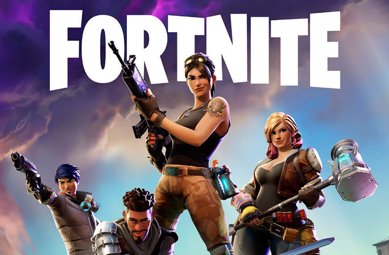

Historia de Fortnite
Fortnite es un videojuego desarrollado por Epic Games y lanzado en 2017. Originalmente presentado como un juego de supervivencia cooperativo, Fortnite ganó popularidad mundial con su modo Battle Royale.
El modo Battle Royale de Fortnite permite que hasta 100 jugadores compitan en una isla, buscando recursos y eliminando a otros jugadores hasta que solo uno quede en pie. Este modo de juego ha sido un fenómeno cultural, atrayendo a millones de jugadores en todo el mundo.
Fortnite ha evolucionado significativamente desde su lanzamiento, con actualizaciones constantes y temporadas temáticas que introducen nuevas mecánicas, personajes y eventos en el juego.
Conoce más sobre la historia de Fortnite aquí.
Jugabilidad
Fortnite es conocido por su combinación única de construcción y combate. Los jugadores pueden recolectar materiales como madera, piedra y metal para construir estructuras defensivas o ofensivas.
El juego se juega en una isla grande que se va reduciendo con el tiempo debido a una tormenta que causa daño a los jugadores que se quedan fuera de la zona segura. Esto obliga a los jugadores a confrontarse y hace que las partidas sean dinámicas y emocionantes.
Fortnite también cuenta con una amplia variedad de armas y objetos, desde rifles de asalto hasta explosivos y trampas, permitiendo a los jugadores adaptar su estrategia y estilo de juego.
Consulta más detalles sobre la jugabilidad en la página oficial.

Personajes
Fortnite cuenta con una amplia variedad de personajes conocidos como "skins". Estos personajes no solo incluyen diseños originales creados por Epic Games, sino también colaboraciones con franquicias famosas como Marvel, DC, Star Wars, y más.
Los jugadores pueden personalizar sus personajes con diferentes atuendos, mochilas, picos y gestos, permitiendo una gran cantidad de personalización y expresión personal en el juego.
Además de las skins, Fortnite introduce personajes no jugables (NPC) en el mapa que pueden interactuar con los jugadores, ofreciendo misiones, recompensas y desafíos.
Explora las diferentes skins disponibles en la página oficial de skins.
Modos de Juego
Fortnite ofrece varios modos de juego, cada uno con su propio conjunto de reglas y objetivos. El más popular es el modo Battle Royale, pero también existen otros modos como el creativo y el modo Salvar el Mundo.
El modo Creativo permite a los jugadores construir sus propios mundos y mapas con una libertad casi ilimitada. Los jugadores pueden crear juegos personalizados, escenarios complejos, y compartirlos con la comunidad.El modo Salvar el Mundo es el modo original de Fortnite, centrado en la cooperación entre jugadores para luchar contra oleadas de enemigos controlados por la IA, recolectar recursos y construir fortificaciones.
Fortnite también organiza eventos especiales y modos de tiempo limitado (LTM) que introducen nuevas dinámicas y desafíos, manteniendo el juego fresco y emocionante.
Descubre más sobre los modos de juego en la página oficial.
Eventos
Fortnite es conocido por sus eventos en vivo que transforman el mundo del juego y ofrecen experiencias únicas. Estos eventos pueden variar desde conciertos virtuales hasta eventos narrativos que avanzan la historia del juego.
Algunos de los eventos más memorables incluyen el concierto de Travis Scott, el evento final de la Temporada X conocido como "The End", y la colaboración con Marvel para el evento "Fortnite x Avengers: Endgame".
Estos eventos no solo atraen a millones de jugadores, sino que también se transmiten en plataformas como Twitch y YouTube, convirtiéndose en fenómenos culturales.
Fortnite sigue innovando con sus eventos, ofreciendo a los jugadores experiencias inesperadas y emocionantes que definen la evolución del juego.
Para más detalles sobre los próximos eventos, visita la página de noticias de Fortnite.